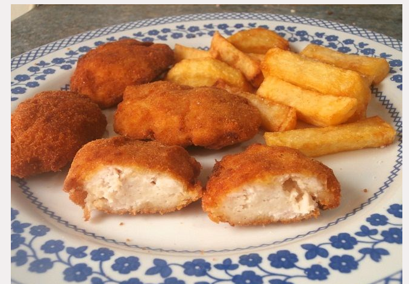

..
Nugets de pollo
Nugets de pollo
INGREDIENTES PARA 2 PERSONAS:
200g de carne picada de pollo
Un chorrito de leche
Una rebanada de pan de molde
Opcionalmente, una loncha de queso blando, tipo Sandwich
Harina, huevo y pan rallado para empanarlas.
Aceite de oliva
sal y pimienta
COMO HACER NUGGETS DE POLLO CASEROS PARA NIÑOS
1. Ponemos en un bol la carne picada de pollo y salpimentamos. Después, quitamos la corteza a la rebanada de pan de mole y la añadimos al bol junto a la carne picada. Añadimos un chorro de leche. La miga y la leche, serán lo que les de esa cremosidad que queremos, al interior de la nugget de pollo. Añadimos, si lo deseamos, el queso y mezclamos todo con ayuda de la mano o una cuchara, hasta que quede todo bien integrado. Después, se puede dejar reposar unos minutos en el frigorífico para que se compacte la masa.
2. Ahora, con la mano, cogemos una pequeña porción de la masa, la aplastamos un poquito, dándole esa forma característica de nugget y la pasamos por harina, huevo y pan rallado (por ese orden).
3. Las freímos en abundante aceite de oliva a fuego fuerte. Retiramos y dejamos reposar durante 1 minuto en papel absorbente. Y ¡ya están listas! Un plato de comida rapida hecho en casa, cosa que siempre es de agradecer.
Como sugerencia, puedes servir las nuggets de pollo caseros con una salsa barbacoa y con unas buenas patatas fritas

Principal